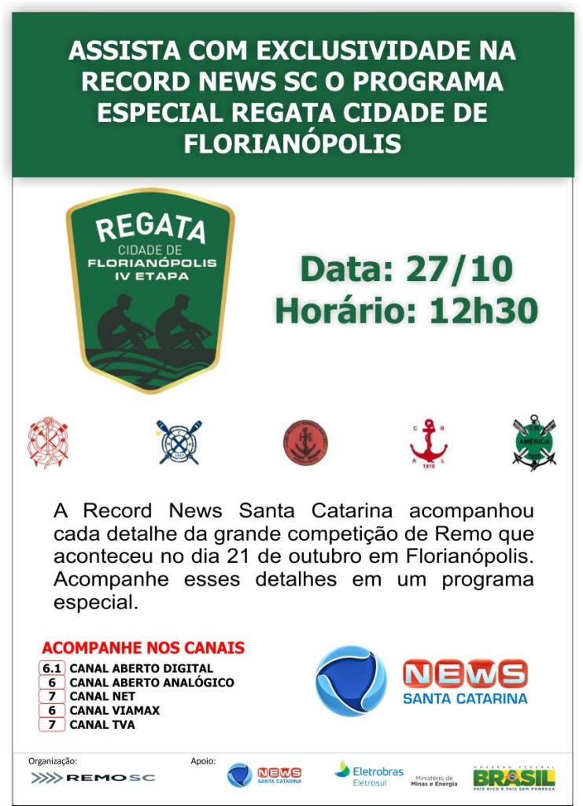

Clube Náutico Francisco Martinelli – Site Oficial
O Clube Campeão de remo em Santa Catarina
Skip to content
Home
Eu Apoio
O Clube
História
Diretoria
Como Praticar
Dicas de Saúde
Campeonatos
Calendário
Resultados 2014
Resultados 2013
Resultados 2012
Galeria
Saiu na Mídia
Memórias
Patrocinadores & Parceiros
Links
Contato
←
Remo de Floripa na Record News
RecordNews – Chamada Programa Especial
By
Jean A. Lima
|
Published
25 de October de 2012
|
Full size is
862 × 1190
pixels

Bookmark the
permalink
.